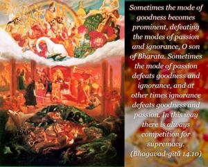
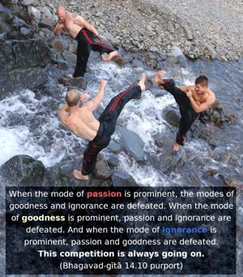
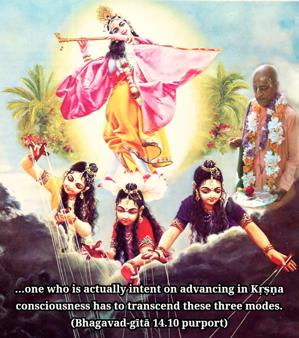
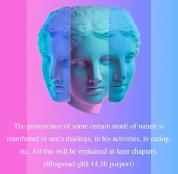

Sometimes the mode of goodness becomes prominent, defeating the modes of passion and ignorance, O son of Bharata. Sometimes the mode of passion defeats goodness and ignorance, and at other times ignorance defeats goodness and passion. In this way there is always competition for supremacy.




When the mode of passion is prominent, the modes of goodness and ignorance are defeated. When the mode of goodness is prominent, passion and ignorance are defeated. And when the mode of ignorance is prominent, passion and goodness are defeated. This competition is always going on. Therefore, one who is actually intent on advancing in Kṛṣṇa consciousness has to transcend these three modes. The prominence of some certain mode of nature is manifested in one’s dealings, in his activities, in eating, etc. All this will be explained in later chapters. But if one wants, he can develop, by practice, the mode of goodness and thus defeat the modes of ignorance and passion. One can similarly develop the mode of passion and defeat goodness and ignorance. Or one can develop the mode of ignorance and defeat goodness and passion. Although there are these three modes of material nature, if one is determined he can be blessed by the mode of goodness, and by transcending the mode of goodness he can be situated in pure goodness, which is called the vasudeva state, a state in which one can understand the science of God. By the manifestation of particular activities, it can be understood in what mode of nature one is situated.